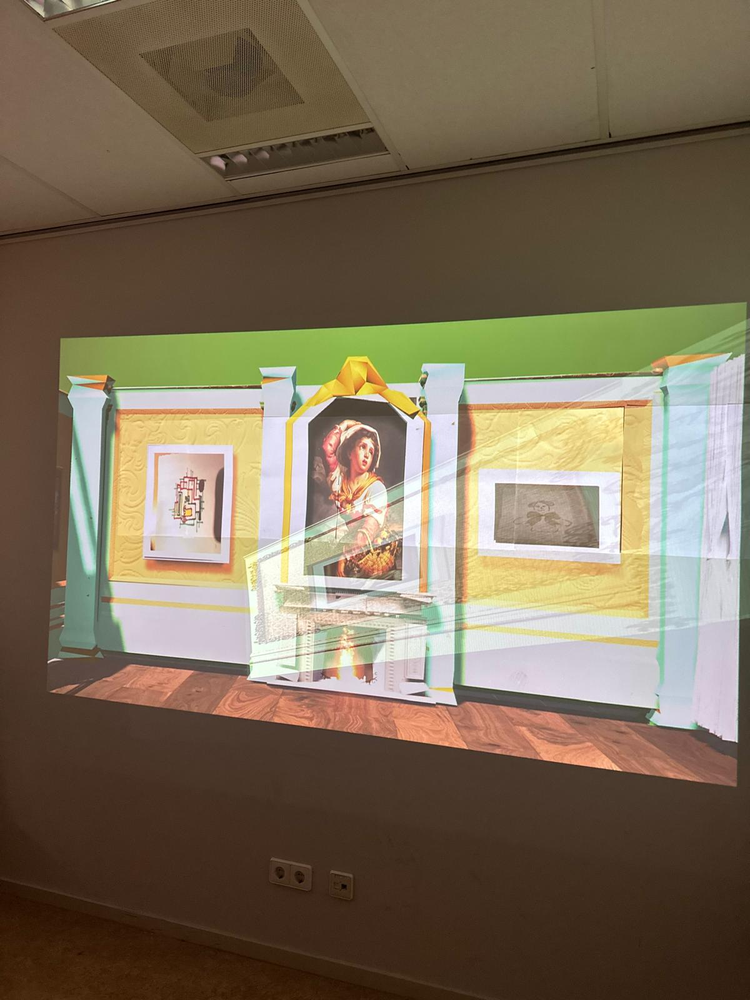

Project
De oude draden van Rotterdam
Een immersieve museumervaring waarin bezoekers de 18e-eeuwse geschiedenis van Rotterdam beleven.

Over dit project
De oude draden van Rotterdam is een immersieve museumervaring rondom de 18e-eeuwse geschiedenis van Rotterdam. Bezoekers stappen een digitale reconstructie binnen van een historische kamer die gebaseerd is op de woning aan de Leuvehaven van de gebroeders Jan en Pieter Bisschop. Door middel van projectie, audio, storytelling en interactieve opdrachten worden bezoekers meegenomen in het verhaal van de broers en hun kunstcollectie.
Mijn rol
Binnen dit teamproject heb ik meegewerkt aan het concept, de storytelling en de visuele uitwerking van de ervaring. Ook heb ik geholpen met het opbouwen van de digitale kamer, het voorbereiden van de expositie en het verwerken van feedback. Daarnaast dacht ik mee over hoe bezoekers actief onderdeel konden worden van de ervaring door zelf een tekening te maken die later als digitaal schilderij in de kamer verschijnt.
Wat heb ik geleerd?
Tijdens dit project heb ik geleerd hoe je geschiedenis op een interactieve en toegankelijke manier kunt overbrengen. Ik heb meer ervaring opgedaan met immersief ontwerpen, storytelling, testen met bezoekers en het combineren van fysieke en digitale interactie. Ook merkte ik hoe belangrijk toegankelijkheid is, zoals ondertiteling, duidelijke uitleg en een ervaring die zonder ingewikkelde apparatuur te begrijpen is.